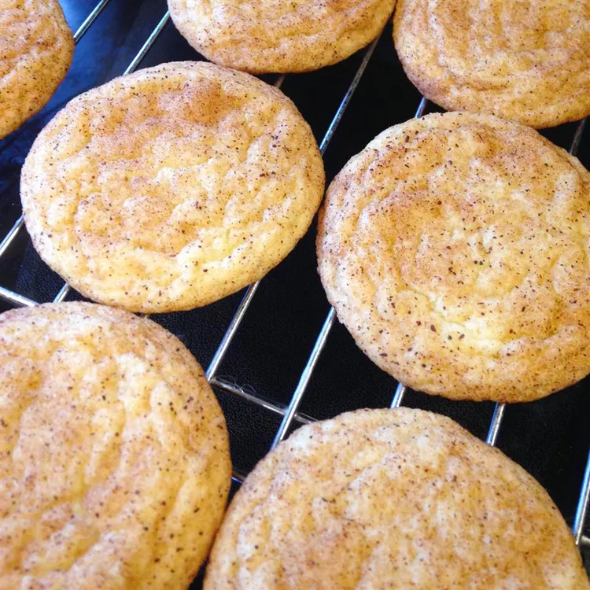

Grandma Ruth's Easy Snickerdoodle Cookies

Description
This is my David Beveridge's grandma's recipe that everyone loves!
Ingredients
Cookies:
- 1 and 1/2 cups white sugar
- 1 cup softened butter
- 2 eggs
- 2 and 3/4 cups all-purpose flour
- 2 teaspoons cream of tartar
- 1 teaspoon baking soda
- 1/4 teaspoon salt
Coating:
- 2 tablespoons white sugar
- 2 teaspoons ground cinnamon
Steps
- Preheat oven to 400 degrees F (200 degrees C). Line a baking sheet with parchment paper or lightly grease.
- Beat 1 1/2 cups white sugar, butter, and eggs together in a bowl using an electric mixer until smooth and creamy. Combine flour, cream of tartar, baking soda, and salt in a separate bowl; stir into creamed butter mixture until dough holds together.
- Mix 2 tablespoons white sugar and cinnamon together in a bowl.
- Form dough into 2-teaspoon-size balls and roll in the cinnamon-sugar mixture. Place dough balls, about 2 inches apart, on the prepared baking sheet.
- Bake in the preheated oven on the center rack for 7 minutes. Allow cookies to cool on the baking sheet for 5 minutes before transferring to a wire rack.